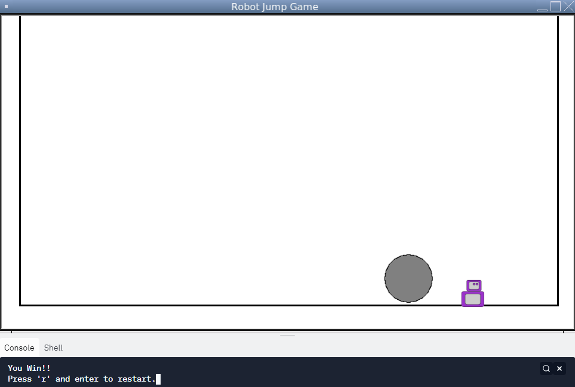
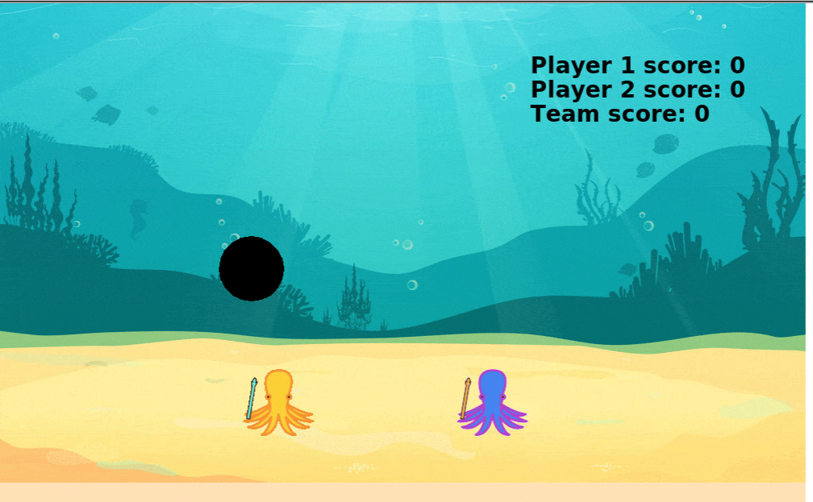
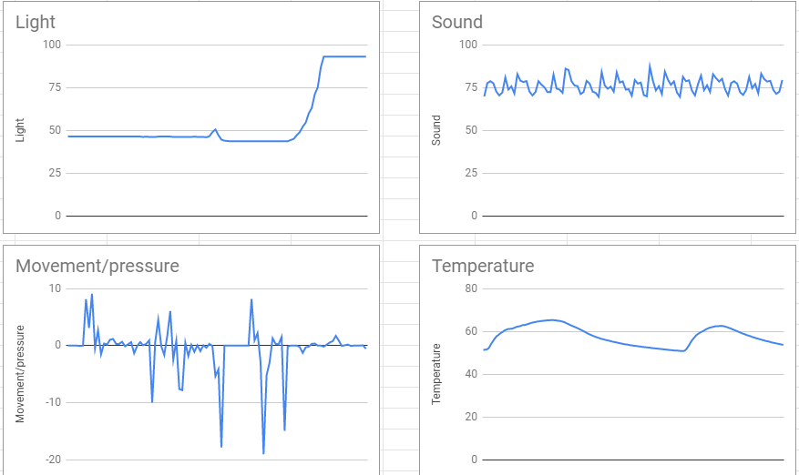
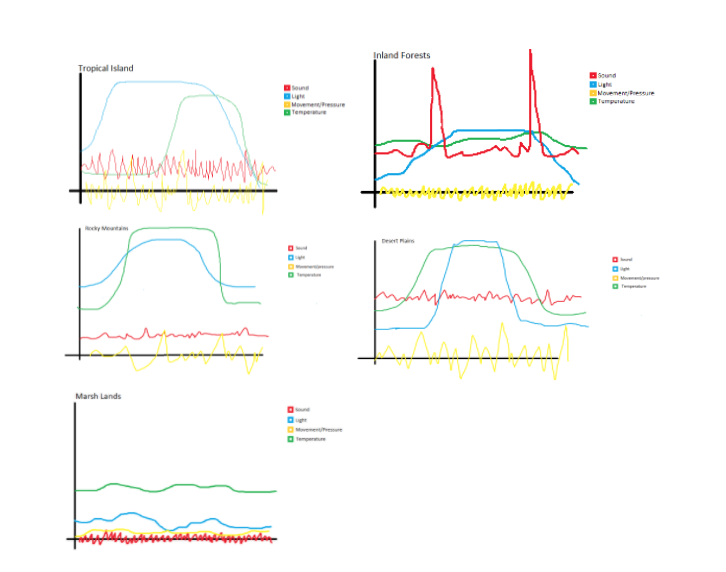
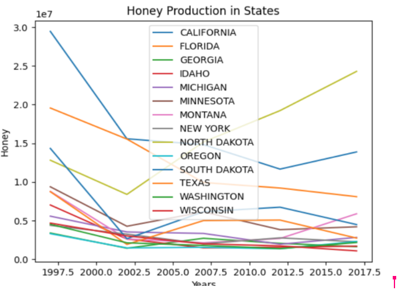
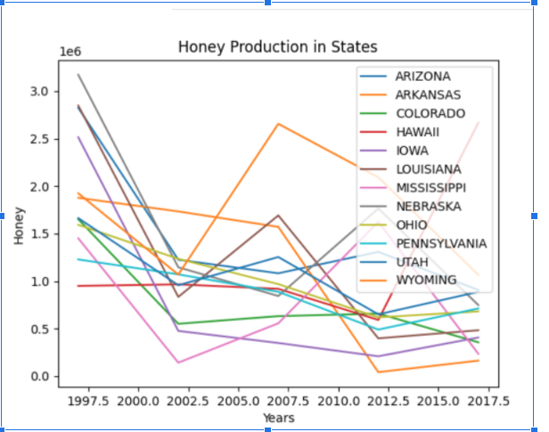
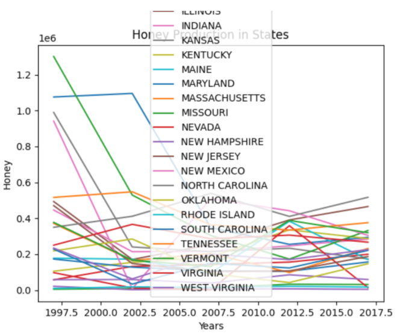

This is my Portfolio Page!
Project 1: Robo Jump

For my first project, I made a robot character which can jump over a boulder. If it reaches a certain point you'll be able to win. Some functions that we made for this game are the jump, move forward, or move backward functions. If you touch the boulder, you'll lose the game.
Project 2: Double Bubble Trouble

For my second project, I made a two player game, where two octopi are in the ocean, and they have wands which let them shoot balls which bounce in the ocean. For every ball you hit, you get more points, and there is a leaderboard at the end which shows the points of all teams in the top 5.
Project 3: Riccardo's Adventures
For my third project in Scratch I did a platformer which has an octopus named Riccardo trying to escape an ocean which is becoming increasingly more polluted. The player uses Riccardo to jump through various obstacles using the w, a, s and d keys or arrow keys, and the background changes with new levels.
Project 4: Project Rover Phone Home



After we graphed all the data out, and then made some sketches for what the graphs for other environments would be, we decided that inland forests made the most sense. Though at first we thought that it might be marshlands, due to the fact that the sound seemed to more closely relate to animal chirps than wind howling, we ultimately decided that wind howling with thunderstorms would make more sense. Our other graphs for temperature and movement also matched, being very close to our sketches. The only ones which might not have matched is light, but we still felt confident knowing that the other graphs matched well.
Project 5: Honey Project



For this project we went and got data from a website called USDA on the production of honey in the states. We first filtered and organized the data of different years in the 2000's to plot different graphs. Then, we used these graphs to analyze and identify any patterns in honey production and the state of bee colonies. We concluded that honey production and human activity might have certain effects on bee colonies.